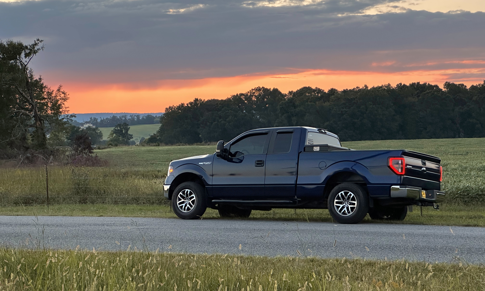
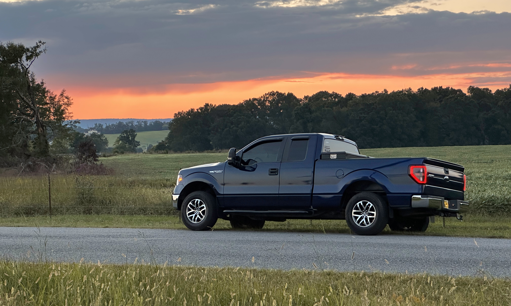

About 12th Gen Nation and What we do to Our Trucks
Many of our members have put in a very large amount of time and effort into their F-150's. The most common first upgrades one can do are Lighting, Wheels and Tires, Performance Parts, Interior Accents, and Exterior Accents. Lighting can include headlights, taillights, third brake lights, rock lights, and offroad light bars/pods. Wheels and tires allow you to make your truck more capable on or offroad. Performance parts will allow you to make your truck faster, tow better, or handle terrain better. Interior accents will allow you to make the interior look more modern or change the radio to a Carplay compatable unit. Exterior accents will give you the ability to make your exterior look more unique and unlike other trucks on the road, whether it be different colored emblems or changing the grille.
Some sites where you can buy some of these parts are American Trucks, CarId, and Summit Racing. Some parts are made by small businesses though. The best lighting company is actually based in Atlanta, GA. Morimoto Lighting offers a lot of pricy, but extremely well built lighting components. For wheels and tires, local offroad shops are the best option, as many of them offer items at a discounted price. Some companies offer sponsorship deals where you can showcase their products in exchange for free or discounted products.
Truck Photos
 

How to Join Us ⌕
There are several ways to join our truck community. (You will have to own a 2009-2014 Ford F-150 to join.) Click the Club Info Feed link below. Direct message any of the four club leaders. Another way is through Snapchat. Add david_derlak and request to join. We will get back with you as soon as possible.